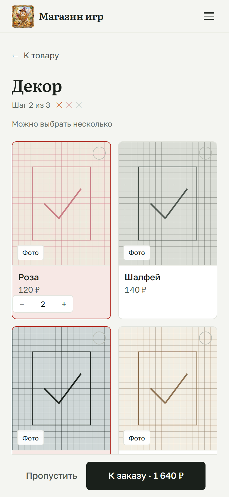
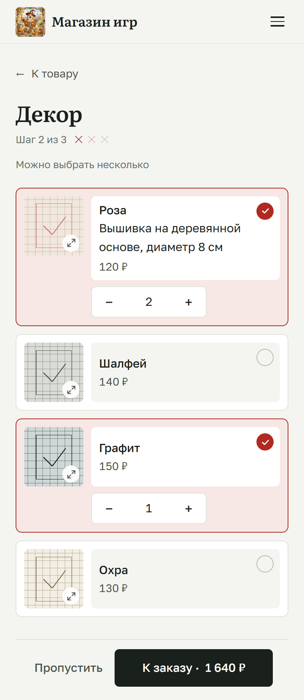
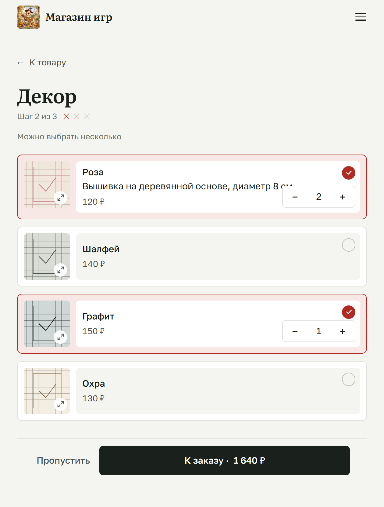
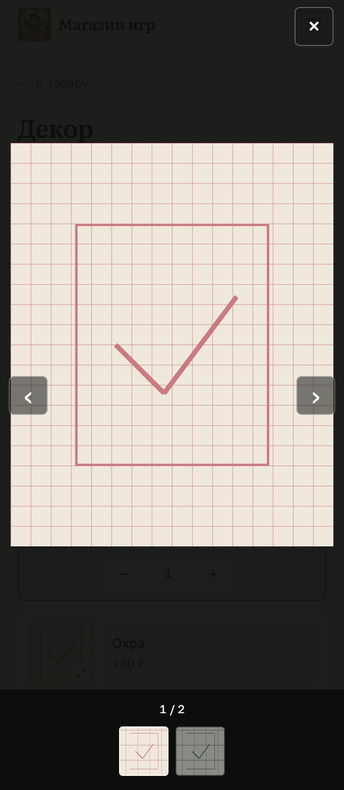

Черновик · в приложении ещё не менялось
Вместо крупных карточек 4:5 — компактные строки: единая миниатюра 76×76, название, описание и цена в выделенной области выбора, количество сразу под ней. Фото открываются по миниатюре на весь экран: крупное изображение и все миниатюры снизу.




Живое превью: rows.html — строки кликаются, степпер работает, миниатюра открывает фото. Для сравнения: current.html. Снимки — docs/shots/pick-v2-*.